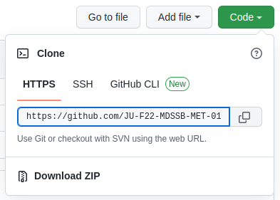
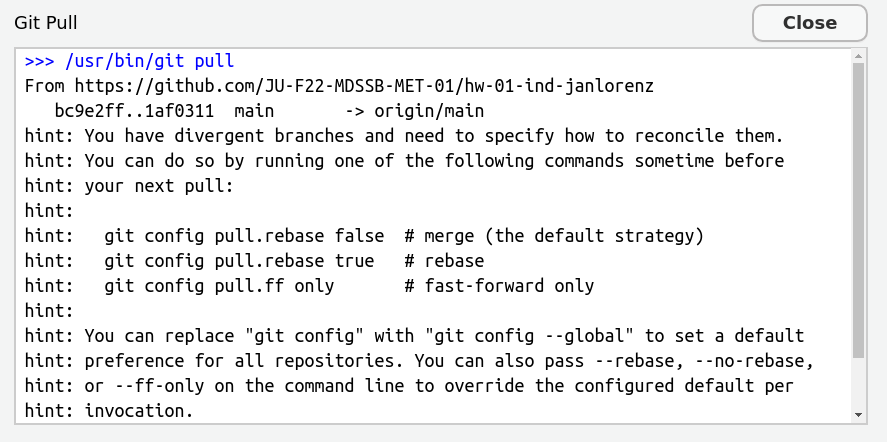

W#11: Data Analysis Projects, Collaborative Git
Jan Lorenz
Towards Your Data Science Projects
HW 04 Task 1: Form Project Teams
✔️ Team formation is mostly complete
8 repositories are created in
https://github.com/orgs/JU-F22-MDSSB-MET-01/.
You are to deliver your project reports in your repository.
HW 04 Task 2:
Start a document and list data source/topic and draft questions
- An initial document in the repository which lists either
- a link and brief description to a data source you want to build your project on, or
- a topic and three potential questions on that topic you like to answer within your project report.
- Ideally, you provide both.
- None, of these binds you. It can be changed.
- It is possible to build on either ESS or Corona data. If you want to do this, make sure to find new questions not those covered in Homework or Lectures.
❌ Only two teams pushed a document to the repository. No quarto draft yet.
OK, let’s do it together now
There is a template quarto file here: https://github.com/JU-F22-MDSSB-MET-01/project-TEMPLATE/blob/main/report.qmd
Plan:
- We clone project repositories now and add the template
- We go through a push and pull cycle
- We create and solve a merge conflict
Learning goal:
- First experiences with collaborative data science work with
git
Collaborative Work with Git
Step 1: git clone project-TEAMname
- Go to: https://github.com/orgs/JU-F22-MDSSB-MET-01/
- Find your project repository
project-TEAMname - Copy the URL
 - Go to RStudio
- New Project > Form Version Control > Git > Paste your URL
- The project is created, but it is empty
Step 2: Download the template file
Only the first team member needs to do the following:
- Who is the first team member? The first one mentioned in the TEAMname.
Example: In the projectproject-PoroJanPoro is the first team member
The first team member copies the template file to project folder locally.
Go to: https://github.com/JU-F22-MDSSB-MET-01/project-TEMPLATE
Click on the file
report.qmdClick on “Raw” to see the file content only. Usually, this happens in the browser.
Select “Save as” from your browser’s menu and save the file in the project folder on your computer:
YOURPATH/project-TEAMname/copy a template quarto file there
one team member commits and pushes the file
the other pulls the latest commits
Step 3: First Team member commits and pushes
Now the first team member propagates the template file to the others.
- As the first team member in RStudio:
- Select the document
report.qmdin the Git pane to performgit addof the file - Do a
git commitin the RStudio interface. Enter “Add report.qmd” as commit message. - Do
git pushin the RStudio interface.
- Select the document
Step 4: Second (and third) team member pulls
Who is the second team member? The first one mentioned in the TEAMname.
Example: In the projectproject-PoroJanJan is the second team memberAs the second team member in RStudio:
- Do
git pullin the RStudio interface.
- Do
What does git pull do?
- It first does
git fetchwhich gets the commit from the remote repository (GitHub) to the local machine.
- Then it
git merges the commit with the latest commit on your local machine. - When we are lucky this works with no problems. (Should be the case with new files.)

Source: https://mastodon.social/@allison_horst/109303149552034159
Step 5: Merge independent changes
Git can merge changes in the same file when there are no conflicts. Let’s try.
- The second team member:
- Change the title in the YAML to something meaningful.
- Save, add the file in the Git pane, commit with message “Title”, push.
- The first team member:
- Add your name in the author section of the YAML, save the file, add the file in the Git pane and make a commit.
- Try to push. You should receive an error. Read it carefully, often it tells you what to do. Here: Do
git pullfirst. You cannot push because remotely there is a newer commit (the one your colleague just made). - Pull.
- This should result in message about a successfull auto-merge. Check that both changes are there. If you receive several hints instead, first read the next slide!
??? git configuration for divergent branches
If you pull for the first time in a local git repository, git may complain like this:

Read that carefully. It advises to configure with git config pull.rebase false as the default version.
How to do the configuration?
- Copy the line
git config pull.rebase falseand close the window. - Go to the Terminal pane (not the console, the one besides that). This is a terminal not for R but to speak with the computer in general. Paste the command and press enter. Now you are done and your next
git pullshould work.
Step 6: Push and pull the other way round
- The first member:
- The successful merge creates a new commit, which you can directly push.
- Push.
- The second team member:
- Pull the changes of your colleague.
Practice a bit more pulling and pushing commits and check the merging.
Step 7: Create a merge conflict
- Both team members:
- Change a word in the title (but different ones)
git addandgit commiton your local machine.
- First member:
git push - Second member:
git pull. That should result in a conflict. If you receive several hints instead, first read the slide two slides before!- The conflict should show directly in the file with markings like this
>>>>>>>>
one option of text,
======== a separator,
the other option, and
<<<<<<<.
Step 8: Solve the conflict
- The second member
- You have to solve this conflict now!
- Solve is by editing the text
- Decide for an option or make a new text
- Thereby, remove the
>>>>>,=====,<<<<<< - When you are done:
git add,git commit, andgit push.
Now you know how to solve merge conflicts. Practice a bit in your team.
Working in VSCode: The workflow is very similar because it essentially relies on git not on the editor of choice.
Advice: Collaborative work with git
- Whenever you start a work session: First pull to see if there is anything new. That way you reduce the need for merges.
- Inform your colleagues when you pushed new commits.
- Coordinate the work, e.g. discuss who works on what part and maybe when. However, git allows to also work without fully coordination and in parallel.
- When you finish your work session, end with a pushing a nice commit. That means. The file should render. You made comments when there are loose ends.
- You can also use the issues section of the GitHub repository for things to do.
- Note: When you work on different parts of the file, be aware that also a successful merge can create problems. Example: Your colleague changed the data import, while you worked on graphics. Maybe after the merge the imported data is not what you need for your chunk. Then coordinate.
- Commit and push often. This avoids that potential merge conflicts become large.
Data Science Projects
A project report in a nutshell
- You pick a dataset,
- do some interesting question-driven data analysis with it,
- write up a well structured and nicely formatted report about the analysis, and
- present it at the end of the semester.
What are good questions?
- Is the question specific or too broad?
- Can it be answered (or at least approached) with data?
- Does the question clearly call for one of the different types of data analysis: descriptive, explanatory, inferential, predictive, causal, or mechanistic? (Note: Questions for causal and mechanistic explanations are not the typical choices for a short term data analysis projects. We have not discussed much on these. They should not be central but may be touched.)
Six types of questions
- Descriptive: summarize a characteristic of data
- Exploratory: analyze to see if there are patterns, trends, or relationships between variables (hypothesis generating)
- Inferential: analyze patterns, trends, or relationships in representative data from a population
- Predictive: make predictions for individuals or groups of individuals
- Causal: whether changing one factor will change another factor, on average, in a population
- Mechanistic: explore “how” as opposed to whether

Project idea of one team
Title: Marijuana related Crime
Data: https://www.kaggle.com/datasets/jinbonnie/crime-and-weed
Topic: Causes and correlations of crimes in the capital of Colorado
Geographical issues. Does location of the district contribute to crime features (like offense_type and offense_category by neighbourhoods)? We may put it onto the city map and understand: Does airport nearby help planting weed, do people do it in their flats or rather in countryhouses etc.
Criminology issues. Relation between MJ and other types of crimes (e.g. against property or rather violent).
Machine learning problems: classify whether (i) certrain crime is industry or non-industry type and (ii) certain crime is more likely to be a larceny or a burglary.
BONUS: Temporal issues of the crimes by type. E.g. do some kinds of crimes tend to be discovered later or to be proved as lasting one with more difficulty? Days of week?
Another team’s project idea
Title: The climate crisis as seen in temperature rise across the world
Data: https://www.kaggle.com/datasets/berkeleyearth/climate-change-earth-surface-temperature-data
Questions:
- How have temperatures risen across the world since 1750?
- Which regions, countries and cities have seen the most extreme changes in temperature? (E.g. Which cities have registered the hottest temperatures, what is the impact of temperature rising in the Arctic region?)
- How are fossil fuel consumption and CO2 emissions correlated to temperature changes in different regions? (Note: We may add an additional dataset on fossil fuel and CO2 data per country for this)
- How closely does a predictive model based on historical data match the temperatures in subsequent years (2016 onwards)
My project
Question: Do summer school vacations (in Germany) spur or mitigate a pandemic like corona?
Idea: Summer School vacations differ substantially in time between the 16 Germany federal states. Maybe this helps to isolate a vacation effect from other things like general seasonality.
Discuss:
Hypothesis?
What data do I need?
Which visualizations would help?
What analysis could I try?
Other teams
- Let us know your first thought
- What were your obstacles?
Different routes to setup your project
- Random datasets from the sources mentioned in the homework.
- Pick a data source (at random) and investigate deeper: What are the cases? What are the variables?
- Start to think about potential exploratory and predictive questions on this. If you feel some curiosity – take it. If not, repeat. Try with at least three datasets.
- Topical data search
- Select a topic you are interested in and search for datasets in the sources
- Continue with investigating deeper and thinking about questions as above
Different routes to setup your project
- Question driven
- Maybe you have a fairly precise question (Like vacation and corona.)
- Think about out what data you would need
- Find that data (investigation!). Adjust the question when seeing what is available.
- Depart from Homework on Corona or ESS (you may download new variables yourself) and develop your own question
Advice
- A manageable dataset: at least 50 cases, good is 10-20 variables with a mix of categorical and numeric
- Go through the visualizations, statistics, and models we had in lectures and homework and think if similar things would be interesting.
- The goal is not an exhaustive data analysis. Do not calculate every statistic and procedure you have learned for every variable, but rather show that you can ask meaningful questions and answer them with results of data analysis and proficient interpretation and presentation of the results.
- Do NOT blindly do all visualization and all statistic on all variables in the data set! You do that in your data exploration but that should not go into your report as is.
- A single high quality visualization which shows a point clearly will receive a much higher appreciation than a large number of poor quality visualizations without an explanation what they should communicate.
Potential questions
- Do we need to stick to methods and visualizations treated in lectures?
- No, you are invited to use other data analysis and visualization methods (from other courses or packages which you self-learn)! We are happy to give advice if we can.
- Are we only allowed to use one dataset?
- No, you can also merge data from different sources. This is a more challenging project because the data wrangling work would be a bit more. If your question calls for it we encourage you to use another data source. The additional effort will be recognized.